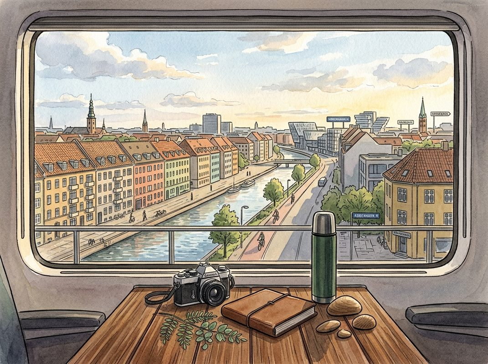

9/10

今日更新
XPeng Co-President: China's EV Race, Flying Cars and Humanoid Robots
来源：In Good Company with Nicolai Tangen
状态：已读完整音频 transcript
这期播客深入探讨了小鹏汽车作为一家“物理AI公司”的独特愿景，不仅在电动汽车领域，更将智能技术拓展至飞行汽车和人形机器人，揭示了中国电动汽车市场的激烈竞争、创新速度以及未来出行和生活方式的颠覆性变革，适合所有关注未来科技、智能出行和中国创新力量的读者。
- 小鹏汽车：一家以智能为核心的“物理AI公司”：小鹏汽车副董事长兼总裁顾宏地（Brian Gu）在播客中强调，小鹏并非一家传统意义上的汽车公司，而是一家“物理AI公司”。他指出，电动汽车的真正差异化在于其“智能”而非仅仅是“电动化”。早在九年前公司创立之初，小鹏就确立了以智能为长期核心竞争力的战略，并采取了全栈自研的方法，涵盖硬件、软件乃至最新的AI技术。他认为，一辆智能汽车应能理解用户（包括个人偏好、行为和目的地），并在行驶中平稳、自信地处理各种复杂路况（即使是L2+级别），最终目标是统一自动驾驶和智能座舱的体验，实现通过语音指令控制车辆泊车或停车等功能，提供无缝的智能出行体验。
- 未来出行图景：L4级自动驾驶与超快充电：顾宏地展望了未来十年，认为L4级（完全自动驾驶）能力将成为现实，并将在我们有生之年普及。这将彻底改变人们的时间分配，将驾驶时间转化为工作或娱乐时间，进而对房地产、通信等多个行业产生深远影响。在续航里程方面，他认为当前电池化学技术（非固态电池）在未来五年内仍将是主流，续航里程将维持在500至1000公里之间，其中1000公里已是绰绰有余，再高则会增加成本和重量。真正的变革将体现在充电速度上，未来充电时间将缩短至5-10分钟，与传统燃油车加油时间相近，这将极大缓解用户的“里程焦虑”，改变出行习惯。
- 中国电动汽车市场的“健身房”效应与竞争优势：顾宏地将中国新能源汽车市场形容为全球汽车行业的“最强健身房”，竞争异常激烈。他透露，中国新能源汽车（包括纯电动和插电混动）的渗透率已超过60%，首次超越燃油车成为市场主流，这意味着补贴已不再必要。在这种高压竞争环境下，能够生存下来的企业必须具备全栈技术能力、规模化生产能力和全球化视野。他认为，中国在电动化（电池技术、成本）、市场规模、技术迭代速度、消费者接受度以及供应链效率方面具有领先优势。然而，中国企业也需向国际巨头学习如何在多国市场建立信任、品牌和本地化关系，这需要长期投入。
- “中国速度”的秘密与小鹏的全球化挑战：顾宏地解释了“中国速度”的多个驱动因素：首先，中国在软件、互联网和消费电子领域的强大积累为汽车智能化提供了技术基础；其次，激烈的市场竞争迫使企业加速创新，将技术快速转化为产品和功能；第三，中国消费者对新技术的快速接受和拥抱。这些因素共同将汽车开发周期从3-5年缩短至约2年，并通过OTA更新实现更快的功能迭代。小鹏作为一家年轻、扁平化的科技公司，其DNA决定了决策和创新速度更快。小鹏已在全球70多个国家销售，但面临的挑战是如何在国际市场建立品牌信任、实现本地化适应，并从众多出海的中国品牌中脱颖而出。
- 飞行汽车：从概念到“陆空航母”的商业化探索：小鹏通过孵化公司汇天（Airage）积极布局飞行汽车领域。顾宏地介绍，汇天已深耕飞行汽车十年，其最新产品是一款名为“陆空航母”的飞行汽车，它能搭载一架垂直起降飞行器（VTOL），在需要时自动分离并飞行30分钟，可搭载两人。这款产品已非常接近商业化，并已在全球范围内获得超过7000份意向订单。尽管飞行汽车的普及将是一个漫长而渐进的过程，可能需要比传统汽车3-5倍的教育和监管审批时间（例如中国的CAAC认证），但顾宏地对“低空经济”的巨大潜力充满信心，认为它将解放尚未开发的巨大经济价值。
Can AI help us better predict the weather?
来源：Google DeepMind: The Podcast
原链接：https://deepmind.com/podcast
状态：已读完整音频 transcript
这期播客深入探讨了Google DeepMind如何利用AI技术革新天气预测，特别是飓风预警，通过“梅丽莎”飓风的真实案例，展示了AI模型在提供更早、更精准、更高置信度预警方面的巨大潜力，对于关注AI前沿应用、气象科技发展以及灾害预防的中文读者而言，本期内容极具启发性。
- 气象预测的传统挑战与AI新范式：天气预测历来是地球上最复杂的物理难题之一，其挑战源于大气系统对微小扰动的极端敏感性，即著名的“蝴蝶效应”——今日气压的微小变化可能在一周后演变为一场重大风暴。传统上，科学家们依赖超级计算机，通过求解复杂的流体力学方程来模拟天气变化。然而，Google DeepMind正在开辟一条截然不同的道路。自2020年起，DeepMind团队便开始探索AI在气象预测领域的应用，最初利用卫星图像预测短期降雨。如今，他们最新的系统WeatherNet已能为全球提供详细的逐小时天气预测，标志着AI技术在应对这一古老挑战中迈出了关键一步。
- 飓风“梅丽莎”：AI预测的里程碑案例：播客以2025年10月袭击牙买加及加勒比海多个岛屿的“梅丽莎”飓风为例，生动展现了AI预测的实际影响。DeepMind的飓风预测模型已研发多年，并于2025年初发布了最佳模型及“WeatherLab”实时飓风预测网站，同时与美国国家飓风中心（NHC）等机构建立了合作。当“梅丽莎”飓风在大西洋开始形成时，它最初规模很小，但DeepMind的模型在飓风登陆前约一周，便开始以高度置信（约80%）预测其将迅速增强为五级飓风，并给出了具体的路径和强度预测。
- 预警能力的关键突破与传统模型的差异：在“梅丽莎”事件中，DeepMind模型的预测能力显著超越了其他传统模拟。虽然其他模型也预测了风暴强度的增加，但没有一个能像DeepMind模型那样，对“梅丽莎”将达到五级飓风的强度、具体路径和置信水平提供如此明确的判断。国家飓风中心（NHC）的预报员综合考虑了各种信息，包括传统模型和新兴模型。最终，在DeepMind模型高置信度预测的强烈影响下，NHC在周六（风暴尚未达到一级）便史无前例地发布了五级飓风预警，预计“梅丽莎”将在周一达到五级，周二登陆，提供了约三天的宝贵预警时间。这是NHC首次对如此低强度的风暴做出五级预测。
- 提前预警的生命与财产价值：尽管“梅丽莎”飓风最终以每小时170英里（约274公里）的风速登陆，造成了95人死亡和巨大的财产损失，成为有记录以来风速最高的飓风之一，但播客强调，如果没有DeepMind模型提供的提前预警，后果可能更加严重。提前三天的预警时间，使得地方官员能够启动疏散、开放避难所、调配资源等一系列准备工作，从而最大程度地减少了人员伤亡和财产损失。这凸显了精准、高置信度预警在灾害预防中的决定性作用，以及运营中心在保护生命、财产和灾后恢复服务方面的关键价值。
- DeepMind气象AI的发展历程与技术优势：DeepMind在AI气象预测领域的投入由来已久。从2020年利用卫星图像预测短期降雨开始，团队逐步发展出能够进行全球10-15天天气预报的模型。大约四年前，他们正式启动了全球模型项目，并在一两年前组建了专门的子团队，专注于热带气旋等极端天气现象的预测。Peter Battaglia指出，DeepMind认为，通过充分利用历史数据，并运用先进的机器学习和建模技术，可以捕捉到天气模式中更精细、更微妙的结构，从而实现更准确的预测。实验评估显示，DeepMind的模型在许多情况下能将预测准确度提前“额外一天”，这意味着原本需要两天才能达到的准确度，现在三天就能实现。
South Africa Sessions: The Greatest Snake Oil Salesman ft. Sizwe Dhlomo
来源：What now with Trevor Noah
状态：已读完整音频 transcript
这期播客以轻松幽默的对话形式，探讨了从埃隆·马斯克的复杂人格到胡须时尚的社会变迁等多元话题，适合对文化观察、社会现象及个人选择与时代潮流关系感兴趣的听众。
- 埃隆·马斯克的双面性：天才与“忽悠”的结合：播客开篇，主持人特雷弗·诺亚（Trevor Noah）对埃隆·马斯克（Elon Musk）进行了精辟的概括。他认为马斯克兼具天赋、远见和“忽悠”能力，并戏称这三者的结合或许是人生成功的完美配方。这种评价揭示了马斯克作为公众人物的复杂性：他既是创新者和梦想家，其宏大愿景令人惊叹，同时又以其独特的营销手段和有时被视为夸大的承诺而闻名。这种对马斯克人格的洞察，为听众提供了一个理解这位科技巨头多维度形象的视角，也暗示了在现代社会中，个人魅力与战略性沟通在成功中的重要作用。
- 非洲内部的幽默与对政府失职的无奈：节目中，特雷弗与嘉宾西兹韦·德拉莫（Sizwe Dhlomo）之间有一段关于尼日利亚人“嘲讽”南非人的幽默对话，这反映了非洲国家之间常见的、带有善意的文化调侃。然而，这段轻松的交流很快引出了一个更深层次的社会观察：西兹韦指出，人们之所以会采取某些极端行动，往往是出于对政府长期不作为的沮丧。他提到，政府官员似乎只有在发生严重事件（例如学校被烧毁）时才会介入。这种因果关系揭示了民众对公共服务效率低下的不满，以及这种不满如何转化为社会情绪和行为，凸显了非洲社会中普遍存在的治理挑战和民众的无奈。
- “尤金悖论”：好奇心与无知的并存：特雷弗在节目中提到了一个名为“尤金”的人物，并用“尤金悖论”来形容一种有趣的现象。他认为尤金既有足够的好奇心使自己显得有趣，但同时又因其粗鲁和无知而令人反感。这种描述不仅是对特定人物的刻画，更是一种对人类普遍特性的哲学思考。它暗示了知识、好奇心与社交礼仪之间的微妙平衡。一个人可能在某些领域表现出极大的求知欲，但在其他方面却显得缺乏常识或教养。这种反差提醒我们，真正的智慧不仅在于获取信息，更在于如何以得体和尊重的态度与世界互动。
- 胡须时尚的变迁：从“不修边幅”到“潮流标志”：播客中一个引人入胜的讨论是关于胡须时尚的演变。特雷弗透露他正考虑去土耳其进行胡须移植，而西兹韦则以过来人的身份，幽默地劝他三思。西兹韦回忆道，在过去很长一段时间里，胡须被视为“不修边幅”甚至“令人作呕”的象征，不适合企业环境、电视节目或政治人物。留胡子的人甚至可能被视为“可疑”。这种社会观念的转变是巨大的，它反映了时尚潮流并非一成不变，而是随着时代、文化和公众接受度的变化而不断演进。疫情的爆发被认为是加速胡须被社会广泛接受的“最后一步”，因为它让更多人居家办公，放松了对个人形象的严格要求。
- 个人选择与时代潮流的无奈交织：西兹韦在胡须话题上的个人经历，深刻地展现了个人选择如何被时代潮流所左右，以及事后可能产生的遗憾。他坦言，在胡须不被社会接受的年代，他为了适应主流审美和职业要求，放弃了留胡子的权利，甚至可能通过激光脱毛等方式永久性地改变了胡须生长。然而，随着胡须重新成为时尚，并被社会广泛接受，他现在感到自己“过早地放弃了遗产和继承权”，因为他已经失去了拥有胡须的“选项”。特雷弗也表示，当时确实无法预料到社会对胡须的看法会发生如此大的转变。这种讨论揭示了个人在面对不确定的未来和不断变化的社会规范时，做出选择的复杂性和潜在的遗憾。
历史精选
Indian Premier League Cricket
来源：Acquired
原链接：https://www.acquired.fm/episodes/indian-premier-league-cricket
状态：已读网页 transcript
这期播客深入剖析了印度板球超级联赛（IPL）如何在短短十几年内，从零开始成长为全球价值第二高的体育联盟，它不仅是体育商业的奇迹，更是资本主义与印度文化“宗教”般狂热完美结合的典范，适合所有对体育产业、新兴市场商业模式及颠覆性创新感兴趣的听众。
- IPL的缘起：一场复仇与机遇的交织：印度板球超级联赛（IPL）的诞生，离不开其创始人拉利特·莫迪（Lalit Modi）的个人经历与复仇意志。上世纪90年代初，莫迪在美国杜克大学求学期间，深受美国体育文化（特别是“周一橄榄球之夜”）的启发，看到了体育商业的巨大潜力。回到印度后，他与迪士尼合作，利用家族烟草公司的分销网络，将迪士尼内容引入印度新兴的电视市场。随后，他与ESPN合作，试图挑战默多克新闻集团旗下的Star频道在印度板球转播权上的主导地位。然而，在Star和ESPN合并后，莫迪被指控财务违规并被踢出局，这在他心中埋下了对默多克的深仇大恨。莫迪发誓要以其人之道还治其人之身，从默多克手中夺走印度板球的控制权，这成为他日后创建IPL的强大动力。
- BCCI的商业化革命：从“慈善”到“印钞机”：为了实现复仇，莫迪制定了周密计划：先通过地方板球协会进入印度板球管理委员会（BCCI）。2005年，他成功当选BCCI董事会成员后，立即对这个此前被视为“非营利”的机构进行了颠覆性商业化改革。他将印度国家队主赞助商撒哈拉集团每年仅10万美元的赞助费，暴涨至每天100万美元，即每年1.05亿美元，使其一夜之间成为全球最高价的球衣赞助。随后，他以每年5200万美元的价格将国家队装备赞助权拍卖给耐克。最引人注目的是，他单方面终止了Star频道每年1000万至1500万美元的转播合同，并以最低5亿美元的底价重新拍卖四年期转播权，最终由印度本土公司Nimbus以6.2亿美元竞得。莫迪在短短两个月内，将BCCI的年收入从千万美元级别提升至数亿美元，彻底将其从一个准政府机构转变为一个商业巨头，并成功将默多克排除在外。
- T20板球的崛起：为大众而生的娱乐产品：IPL的成功也得益于板球运动自身的一场革命。传统的板球比赛（Test Cricket）长达五天，节奏缓慢，观众群体日益老龄化。即使是“一日国际赛”（ODI）也需耗时八小时。2003年，英格兰板球委员会推出了“20回合制”（T20）板球，将比赛时间压缩至2.5到3小时，每队仅有120个投球机会。这种快节奏、高得分、充满“本垒打”式六分球的赛制，完美契合了现代观众对即时娱乐的需求，使其首次能在黄金时段进行电视转播。T20最初被传统主义者视为“玩笑”，但这种“派对时间”的形象反而吸引了年轻和大众观众。2007年，印度年轻球员意外赢得首届T20世界杯冠军，更是在IPL推出前夕，为这项新赛制在印度积累了巨大的国民热情和关注度。
- 板球霸主的铁腕：BCCI对挑战者的扼杀：在莫迪加速筹备IPL之际，印度Zee TV的创始人苏巴什·钱德拉（Subhash Chandra）于2007年抢先推出了“印度板球联盟”（ICL），试图绕过BCCI。然而，BCCI凭借其对印度板球的绝对控制力，对ICL施以铁腕。BCCI立即宣布，任何加入ICL的球员都将被终身禁止代表印度国家队或参加任何官方国内赛事，甚至取消了已退役球员的养老金。这种“要么与我合作，要么被禁赛”的策略，有效地切断了ICL获取顶级球员的命脉。BCCI的权力基础在于其对球员合同和媒体转播权的双重垄断，这是其他体育联盟所不具备的结构性优势。最终，ICL在挣扎了两个赛季后于2009年倒闭，BCCI随后宣布大赦，所有与ICL断绝关系的球员均可重返官方板球赛事，彻底巩固了其作为印度板球唯一合法管理者的地位。
- IPL的结构性优势：体育联盟的“完美范本”：莫迪吸取了NFL、NBA和英超联赛的成功经验，并结合BCCI的独特优势，将IPL打造成一个“完美”的体育联盟。IPL采用城市特许经营模式，通过高价拍卖球队所有权给亿万富翁和宝莱坞明星，注入了资本和娱乐元素。它拥有严格的工资帽制度、球员选秀和拍卖机制，确保了球队间的竞争平衡和明星球员的合理分配。更重要的是，BCCI作为板球运动的最高管理机构，拥有对所有印度顶级球员的合同控制权，这使得IPL能够强制所有印度精英球员参赛，并吸引全球顶尖外籍球员。这种对核心“资源”（球员）的垄断，加上对媒体版权的商业化运作，使得IPL能够将“资本主义”的效率与印度民众对板球“宗教”般的狂热完美融合，创造出无与伦比的商业价值和文化影响力。
Robinhood: Mobile First, Margins Later - [Business Breakdowns, EP.233]
来源：Business Breakdowns
原链接：https://joincolossus.com/episode/robinhood-mobile…st-margins-later/
状态：已读完整音频 transcript
本期播客深入剖析了Robinhood如何从一个颠覆性的“移动优先、免佣金”券商，成长为面向下一代投资者的多元化金融服务平台。它不仅揭示了Robinhood在产品创新、用户体验和商业模式上的独特路径，也探讨了其在监管挑战、市场波动中如何实现“再造”与增长。对于关注金融科技创新、市场颠覆者以及下一代消费者行为的投资者和行业观察者而言，本期内容提供了宝贵的洞察。
- 起源与颠覆：移动优先的免佣金模式：Robinhood的诞生源于创始人Vlad Tenev和Baiju Bhatt在2009年金融危机后对传统金融体系的反思。他们在运营高频交易公司时发现，机构投资者无需支付佣金，而散户却要承担高昂费用。这一不公促使他们萌生了创建免佣金券商的想法。Robinhood的成功得益于三大趋势：电子交易的兴起、移动互联网的普及（2013年iPhone仍属新生事物，手机交易被视为疯狂），以及后金融危机时代公众对传统金融机构信任的瓦解。其核心商业模式是“支付订单流”（Payment for Order Flow, PFOF），即券商将客户订单路由给做市商（如Citadel），做市商支付少量回扣。Robinhood通过放弃传统佣金收入，利用更高效的运营和现代技术，将节省的成本回馈给用户。同时，他们通过创新的“候补名单”机制，在产品上线前就积累了超过百万的预注册用户，解决了初创公司在获客和融资上的“先有鸡还是先有蛋”难题，展现了强大的产品和品牌建设能力。
- 商业模式演进与行业变革：Robinhood的PFOF模式在当时是颠覆性的。传统券商如嘉信理财（Schwab）在收取佣金的同时，也从PFOF中获利，相当于“双重收费”。Robinhood的出现迫使整个行业在2019年转向免佣金交易，导致TD Ameritrade和E*TRADE等公司被收购。许多人曾认为这将终结Robinhood的竞争优势，但事实恰恰相反，其客户群在随后的18个月内增长了五倍。这表明Robinhood真正的护城河不仅在于经济模型创新，更在于其卓越的移动用户体验和强大的品牌认同感。PFOF模式对小额交易尤其有利，例如，一笔100美元的交易在传统模式下可能要支付20美元佣金，而在PFOF模式下，对执行质量的影响仅为1-2个基点，极大地降低了散户的交易成本。目前，除了少数专业交易平台，几乎所有主流券商都已采用PFOF模式。
- 用户画像的转变与长期增长潜力：市场对Robinhood用户的普遍认知是“不成熟的日内交易者”，但播客嘉宾Arthur Olsson指出这是一种误解。数据显示，Robinhood用户平均每年交易40次，与嘉信理财的自营客户持平。其交易构成中，三分之二是普通股票，四分之一是期权，十分之一是加密货币，且股票交易主要集中在大盘优质股。更令人惊讶的是，Robinhood的客户流失率在过去三年中仅为5%，留存率高达95%，堪比企业级SaaS公司，甚至高于嘉信理财。账户平均余额在三年内增长了五倍，从2021年加密货币和Meme股热潮的低点也翻了一番。这表明Robinhood用户并非盲目投机，而是通过学习和实践逐渐成为成熟投资者。Robinhood的平均客户年龄为35岁，远低于嘉信理财的55-60岁。这种年轻化的用户结构，结合未来15年内80万亿美元的代际财富转移，意味着Robinhood拥有巨大的长期资产增长潜力，预计其平台资产在未来十年内可能从目前的3000亿美元增长到4万亿美元。
- Robinhood的“再造”：聚焦活跃交易者：2021年的Meme股风波（Robinhood因清算所要求被迫限制部分股票买入）和2022年的市场低迷（交易量下降40-50%）对Robinhood而言是两次“生存危机”。CEO Vlad Tenev将2022年视为Robinhood的“再造”之年。他意识到，虽然公司最初服务于首次投资者，但要实现业务韧性，必须转向服务“活跃交易者”。这意味着产品需要更加专业化和复杂化。Robinhood为此启动了为期两年的密集产品开发，包括推出桌面交易平台Robinhood Legend（提供丰富的图表功能）、提升产品延迟和速度、优化期权交易体验、扩展资产类别（如期货、指数期权）等。产品发布速度从每年一个重大产品提升到每年五个。公司还引入了大量金融服务行业资深人才，如曾主导TD Ameritrade活跃交易业务的Steve Quirk，极大地提升了专业能力。这些努力使得Robinhood在活跃交易者中的NPS（净推荐值）提高了40点，整体客户NPS提高了30点，公司声誉显著改善。
- 多元化营收与Gold会员的战略价值：Robinhood的营收结构也发生了显著变化。2021年，交易收入占总收入的近80%，而如今已降至约55%。取而代之的是现金管理（通过客户闲置资金赚取利息）、保证金借贷和订阅服务等收入的增长。2021年，Robinhood有3项业务的年收入超过1亿美元，而现在这一数字已增至9项，业务多元化使其更能抵御市场周期和利率波动。Gold会员订阅服务（每月5美元）是其核心战略之一，旨在通过提供行业领先的储蓄账户收益、3%信用卡返现、免费市场数据和更优惠的保证金利率等，吸引客户将更多金融资产整合到Robinhood平台。目前Gold会员渗透率为13%，播客嘉宾认为未来有望达到50%，类似于亚马逊Prime模式，通过高价值低价格的订阅服务，巩固客户的金融生活，并为未来的银行和财富管理服务奠定基础。这种模式有助于平滑营收曲线，降低对交易收入的依赖。